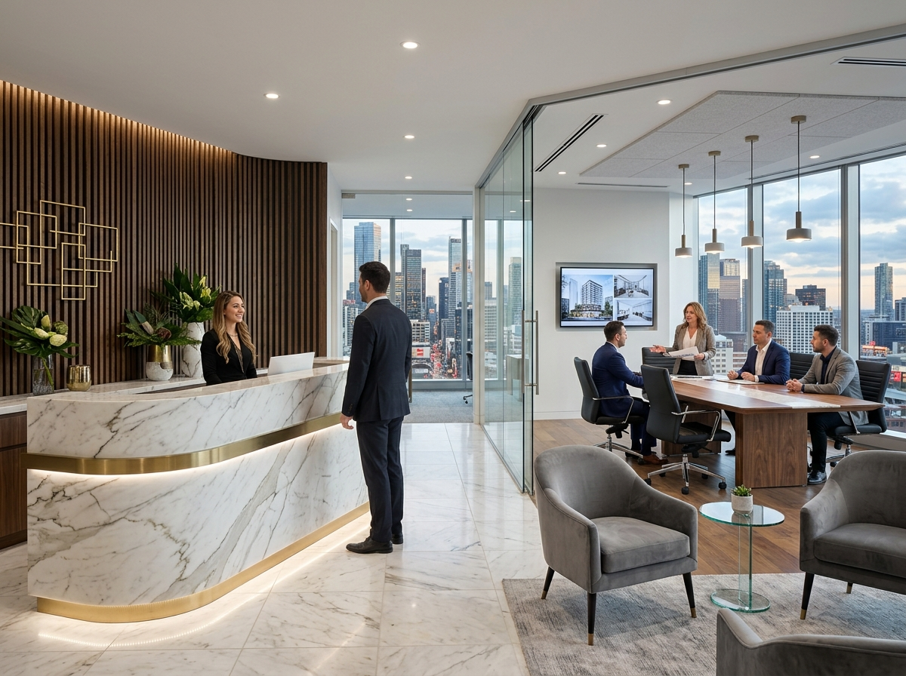

01
01COASTAL LIVING AND DAILY CONVENIENCE
Mahmutlar
A lively Alanya district with a broad housing choice for people who want coastal access and everyday services in the same area.
DISCOVER ALANYA BY LIFESTYLE
Compare city access, coastal living, privacy and housing character around your real daily routine.
This guide follows the districts represented in the current Jasmine collection, without listing empty locations as active inventory.
01COASTAL LIVING AND DAILY CONVENIENCE
A lively Alanya district with a broad housing choice for people who want coastal access and everyday services in the same area.
HOLIDAY AND RESIDENTIAL BALANCE IN WEST ALANYA
A developing western Alanya area considered by buyers comparing beach-oriented living with newer residential complexes.
 03
03VIEWS, PRIVACY AND LOWER DENSITY
An eastern Alanya area considered by buyers prioritising a quieter setting, views and quality residences or villas.
 04
04A CALMER RHYTHM NEAR THE COAST
An area between Mahmutlar and central Alanya for buyers seeking coastal proximity with a more measured residential character.
05CITY ACCESS AND RESIDENTIAL LIVING
A residential district considered by buyers who want to combine access to central Alanya with apartment-complex living.
CITY LIVING NEAR CLEOPATRA BEACH
A neighbourhood for buyers seeking proximity to the Cleopatra coast, central amenities and a walkable daily routine.

07WALKABLE LIVING EAST OF THE CENTRE
An established Alanya neighbourhood considered by buyers seeking combined access to the coast, centre and everyday services.
08ESTABLISHED WESTERN LIVING WITH COASTAL ACCESS
A western Alanya area offering an alternative for buyers comparing an established local centre with coastal and complex-based homes.
HOW TO USE THE GUIDE
Street, gradient, orientation, building management and actual walking routes can change the experience within the same area. Property counts update from the live collection; price and availability remain subject to advisor confirmation.
AREA COMPARISON